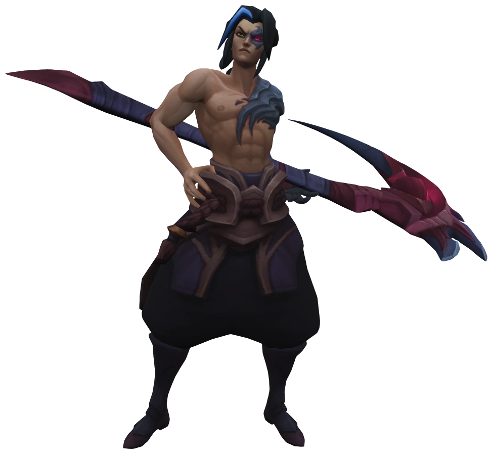

Kayn, the shadow reaper
A peerless practitioner of lethal shadow magic, Shieda Kayn battles to achieve his true destiny—to one day lead the Order of Shadow into a new era of Ionian supremacy. He wields the sentient darkin weapon Rhaast, undeterred by its creeping corruption of his body and mind. There are only two possible outcomes: either Kayn bends the weapon to his will… or the malevolent blade consumes him completely, paving the way for the destruction of all Runeterra.
|  | |
|---|---|
| Kayn | |
| The Shadow Reaper | |
| Release date | 2017-07-12 |
| Last changed | V14.7 |
| Class(es) | Skirmisher |
| Legacy | Fighter Assassin |
| Position(s) | Jungle |
| Resource | Mana |
| Range type | Melee |
| Adaptive type | Physical |
| Store price | BE icon 3150 | RP icon 790 |
| Crafting | Hextech Crafting Shard + BE icon 1890 |
Abilities
The Darkin Scythe

Innate: Kayn has a secondary experience bar that tracks progress toward his Darkin and Shadow Assassin forms. He gathers orbs from champion takedowns and each instance of damage (excluding damage over time) dealt against champions. Once he has earned enough orbs, he unlocks a form based on whether he earned more from melee or ranged champions (for Darkin and Shadow Assassin, respectively), with the other form unlocked later.

Kayn can move near the summoning platform to transform over 6 seconds, restoring to full health and mana and becoming invulnerable, untargetable, and unable to act for the duration. Kayn cannot choose a form if he is unable to cast abilities. The transformation will grant a passive bonus and permanently empower some of Kayn's abilities based on the form chosen. He gains a one-time Homeguard once the transformation is complete.

Shadow Assassin Bonus: If Kayn has been out of combat with enemy champions for over 8 seconds, or he casts Umbral Trespass, upon entering combat and lasting for 3 seconds, he deals 15% - 45% (based on level) of post-mitigation damage dealt against enemy champions as bonus magic damage, also applying on the first instance of damage dealt. If this effect is ready, it will not be lost by taking damage.

Darkin Bonus: Rhaast heals for 25% (+ 0.5% per 100 bonus health) of the post-mitigation physical damage that he deals to enemy champions with his abilities.